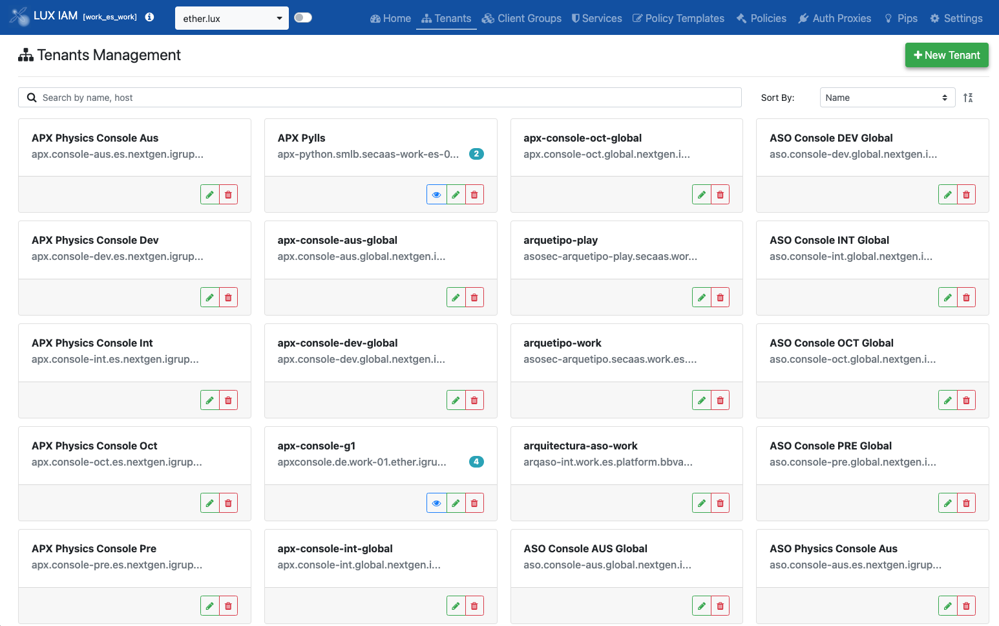
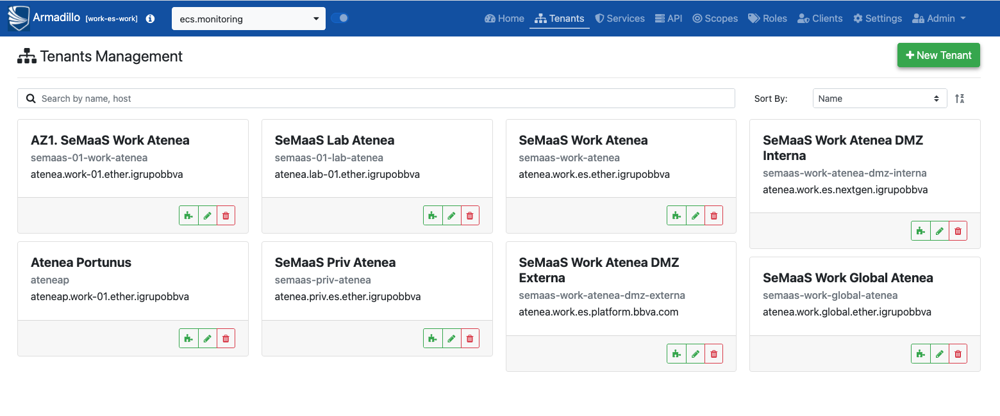

Carmen J. Cabezas (carmen.jimenez.cabezas@bbva.com)
Servicio ECS
Consolas pendiente de publicación en DMZ (de momento red interna)
https://luxiam.secaas.work.es.ether.igrupobbva
Documentación en platform y un tutorial en googleDrive
Manual mediante solicitud Service Desk.
Con la excepción de cuando se usa a través de Armadillo.
Servicio ECS en proceso de desarrollo.
Servicio ECS
Consolas publicadas en DMZ:
https://armadillo-front.<region>.nextgen.igrupobbva
region: work-01 | work-03 | live-01 | live-03
Documentación en platform y un tutorial en googleDrive
Esto es un WIP. Si es un caso de uso catalogado, SEP pueda indicar en el análisis que está autorizada la publicación X.
Idealmente el decidir si exponer por Akamai o no será una opción